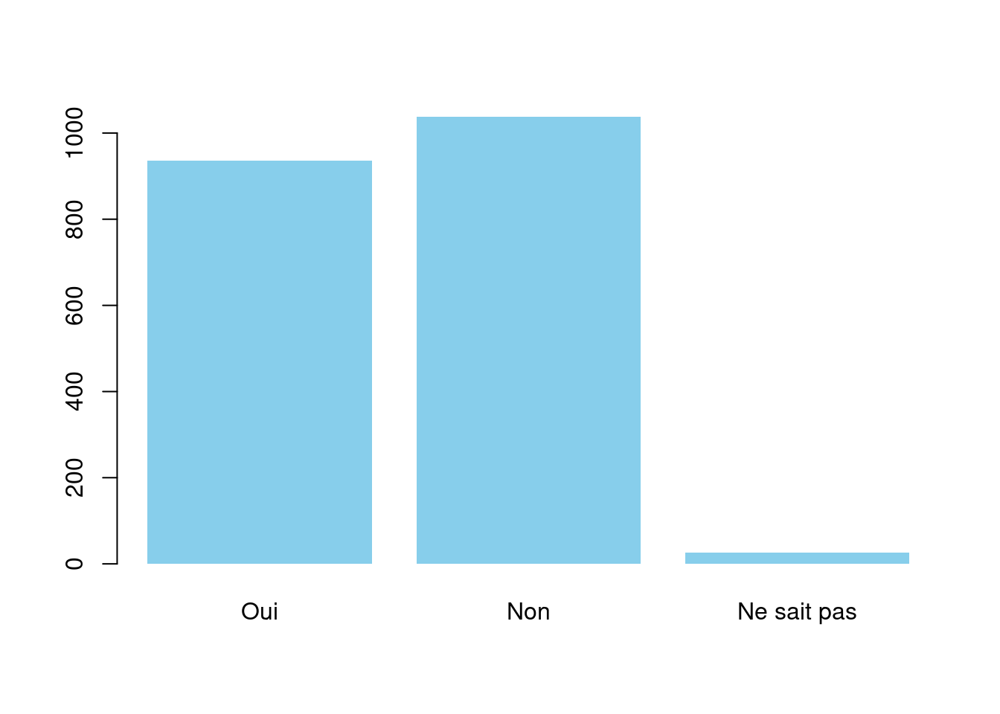

ajoute2 <- function(x) {
res <- x + 2
return(res)
}14 Écrire ses propres fonctions
14.1 Introduction et exemples
14.1.1 Structure d’une fonction
Nous avons vu lors de l’introduction à R que le langage repose sur deux grands concepts : les objets et les fonctions. Pour reprendre une citation de John Chambers, en R, tout ce qui existe est un objet, et tout ce qui se passe est une fonction.
Le principe d’une fonction est de prendre en entrée un ou plusieurs arguments (ou paramètres), d’effectuer un certain nombre d’actions et de renvoyer un résultat :

Nous avons déjà rencontré et utilisé un grand nombre de fonctions, certaines assez simples (mean, max…) et d’autres beaucoup plus complexes (summary, mutate…). R, comme tout langage de programmation, offre la possibilité de créer et d’utiliser ses propres fonctions.
Voici un exemple de fonction très simple, quoi que d’une utilité douteuse, puisqu’elle se contente d’ajouter 2 à un nombre :
En exécutant ce code, on crée une nouvelle fonction nommée ajoute2, que l’on peut directement utiliser dans un script ou dans la console :
ajoute2(3)
#> [1] 5On va décomposer pas à pas la structure de cette première fonction.
D’abord, une fonction est créée en utilisant l’instruction function. Celle-ci est suivie d’une paire de parenthèses et d’une paire d’accolades.
function() {
}Dans les parenthèses, on indique les arguments de la fonction, ceux qui devront lui être passés quand nous l’appellerons. Ici notre fonction ne prend qu’un seul argument, que nous avons décidé arbitrairement de nommer x.
function(x) {
}Les accolades comprennent une série d’instructions R qui constituent le corps de notre fonction. C’est ce code qui sera exécuté quand notre fonction est appelée. On peut utiliser dans le corps de la fonction les arguments qui lui sont passés. Ici, la première ligne utilise la valeur de l’argument x, lui ajoute 2 et stocke le résultat dans un nouvel objet res.
function(x) {
res <- x + 2
}Pour qu’elle soit utile, notre fonction doit renvoyer le résultat qu’elle a calculé précédemment. Ceci se fait via l’instruction return à qui on passe la valeur à retourner.
function(x) {
res <- x + 2
return(res)
}Enfin, pour que notre fonction puisse être appelée et utilisée, nous devons lui donner un nom, ou plus précisément la stocker dans un objet. Ici on la stocke dans un objet nommé ajoute2.
ajoute2 <- function(x) {
res <- x + 2
return(res)
}
Note
Les fonctions étant des objets comme les autres, elles suivent les mêmes contraintes pour leur nom : on a donc droit aux lettres, chiffres, point et tiret bas.
Attention à ne pas donner à votre fonction le nom d’une fonction déjà existante : par exemple, si vous créez une fonction nommée table, la fonction du même nom de R base ne sera plus disponible (sauf à la préfixer avec base::table). Si vous “écrasez” par erreur une fonction existante, il vous suffit de relancer votre session R et de trouver un nouveau nom.
Avec le code précédent, on a donc créé un nouvel objet ajoute2 de type function. Cette nouvelle fonction prend un seul argument x, calcule la valeur x + 2 et retourne ce résultat. On l’utilise en tapant son nom suivi de la valeur de son argument entre parenthèses, par exemple :
ajoute2(41)
#> [1] 43Ou encore :
y <- 5
z <- ajoute2(y)
z
#> [1] 7À noter que comme x + 2 fonctionne si x est un vecteur, on peut aussi appeler notre fonction en lui passant un vecteur en argument.
vec <- 1:5
ajoute2(vec)
#> [1] 3 4 5 6 7Si on récapitule, une fonction se définit donc de la manière suivante :

Une fonction peut évidemment prendre plusieurs arguments. Dans ce cas on liste les arguments dans les parenthèses en les séparant par des virgules :
somme <- function(x, y) {
return(x + y)
}somme(3, 5)
#> [1] 8Une fonction peut aussi n’accepter aucun argument, dans ce cas on laisse les parenthèses vides.
miaule <- function() {
return("Miaou")
}
miaule()
#> [1] "Miaou"À noter que si on appelle une fonction avec un nombre d’arguments incorrect, cela génère une erreur.
somme(1)
#> Error in somme(1): argument "y" is missing, with no defaultmiaule("ouaf")
#> Error in miaule("ouaf"): unused argument ("ouaf")14.1.2 Exemple de fonction
Prenons un exemple un peu plus élaboré : la fonction table() retourne le tri à plat en effectifs d’une variable qualitative. On souhaite créer une fonction qui calcule plutôt le tri à plat en pourcentages. Voici une manière de le faire :
prop_tab <- function(v) {
tri <- table(v)
effectif_total <- length(v)
tri <- tri / effectif_total * 100
return(tri)
}Notre fonction prend en entrée un argument nommé v, en l’occurrence un vecteur représentant une variable qualitative. On commence par faire le tri à plat de ce vecteur avec table, puis on calcule la répartition en pourcentages en divisant ce tri à plat par l’effectif total et en multipliant par 100.
Testons avec un vecteur d’exemple :
vec <- c("rouge", "vert", "vert", "bleu", "rouge")
prop_tab(vec)
#> v
#> bleu rouge vert
#> 20 40 40Testons sur une variable du jeu de données hdv20031 :
library(questionr)
data(hdv2003)
prop_tab(hdv2003$qualif)
#> v
#> Ouvrier specialise Ouvrier qualifie Technicien
#> 10.15 14.60 4.30
#> Profession intermediaire Cadre Employe
#> 8.00 13.00 29.70
#> Autre
#> 2.90Ça fonctionne, mais avec une petite limite : par défaut table() ignore les NA. On peut modifier ce comportement en lui ajoutant un argument useNA = "ifany".
prop_tab <- function(v) {
tri <- table(v, useNA = "ifany")
effectif_total <- length(v)
tri <- tri / effectif_total * 100
return(tri)
}
prop_tab(hdv2003$qualif)
#> v
#> Ouvrier specialise Ouvrier qualifie Technicien
#> 10.15 14.60 4.30
#> Profession intermediaire Cadre Employe
#> 8.00 13.00 29.70
#> Autre <NA>
#> 2.90 17.35
Avertissement
Quand on modifie une fonction existante, il faut exécuter à nouveau le code correspondant à sa définition pour la “mettre à jour”. Ici, si on ne le fait pas l’objet prop_tab contiendra toujours l’ancienne définition.
Pour “mettre à jour” une fonction après avoir modifié son code, on peut soit sélectionner le code qui la définit et l’exécuter de la manière habituelle, soit, dans RStudio, se positionner dans le corps de la fonction et utiliser le raccourci clavier Ctrl + Alt + F.
Autre amélioration possible : on pourrait vouloir modifier le nombre de décimales affichées pour les pourcentages, par exemple en les limitant à 1. Pour cela on ajoute une instruction round().
prop_tab <- function(v) {
tri <- table(v, useNA = "ifany")
effectif_total <- length(v)
tri <- tri / effectif_total * 100
tri <- round(tri, 1)
return(tri)
}
prop_tab(hdv2003$qualif)
#> v
#> Ouvrier specialise Ouvrier qualifie Technicien
#> 10.2 14.6 4.3
#> Profession intermediaire Cadre Employe
#> 8.0 13.0 29.7
#> Autre <NA>
#> 2.9 17.3Ça fonctionne ! Cela dit, limiter à un chiffre après la virgule ne convient pas forcément dans tous les cas. L’idéal serait d’offrir la possibilité à la personne qui appelle la fonction de choisir elle-même la précision de l’affichage. Comment ? Tout simplement en ajoutant un deuxième argument à notre fonction, que nous nommerons decimales, et en utilisant cet argument à la place du 1 dans l’appel à round().
prop_tab <- function(v, decimales) {
tri <- table(v, useNA = "ifany")
effectif_total <- length(v)
tri <- tri / effectif_total * 100
tri <- round(tri, decimales)
return(tri)
}Désormais, notre fonction s’utilise en lui indiquant deux arguments :
prop_tab(hdv2003$qualif, 1)
#> v
#> Ouvrier specialise Ouvrier qualifie Technicien
#> 10.2 14.6 4.3
#> Profession intermediaire Cadre Employe
#> 8.0 13.0 29.7
#> Autre <NA>
#> 2.9 17.3De la même manière, on pourrait vouloir laisser le choix à l’utilisateur d’afficher ou non les NA dans le tri à plat. C’est possible en ajoutant un troisième argument à notre fonction et en utilisant sa valeur dans le paramètre useNA de table().
prop_tab <- function(v, decimales, useNA) {
tri <- table(v, useNA = useNA)
effectif_total <- length(v)
tri <- tri / effectif_total * 100
tri <- round(tri, decimales)
return(tri)
}
prop_tab(hdv2003$qualif, 1, "no")
#> v
#> Ouvrier specialise Ouvrier qualifie Technicien
#> 10.2 14.6 4.3
#> Profession intermediaire Cadre Employe
#> 8.0 13.0 29.7
#> Autre
#> 2.914.1.3 Effets de bord et affichage de messages
Parfois une fonction n’a pas pour objectif de renvoyer un résultat mais d’accomplir une action, comme générer un graphique, afficher un message, enregistrer un fichier… Dans ce cas la fonction peut ne pas inclure d’instruction return().
Note
Les actions “visibles” dans notre session R accomplies par une fonction en-dehors du résultat renvoyé sont appelés des effets de bord.
Par exemple la fonction suivante prend en argument un vecteur et génère un diagramme en barres du tri à plat de cette variable (en modifiant un peu la présentation au passage).
my_barplot <- function(var) {
tri <- table(var)
barplot(tri, col = "skyblue", border = NA)
}
my_barplot(hdv2003$clso)
Un autre effet de bord très courant consiste à afficher des informations dans la console. Pour cela on peut utiliser print, qui affiche de manière aussi lisible que possible l’objet qu’on lui passe en argument :
indicateurs <- function(v) {
print(mean(v))
print(sd(v))
}
indicateurs(hdv2003$age)
#> [1] 48.157
#> [1] 16.94181Quand on souhaite seulement afficher une chaîne de caractère, on peut utiliser cat() qui fournit une sortie plus lisible que print :
hello <- function(nom) {
cat("Bonjour,", nom, "!")
}
hello("Pierre-Edmond")
#> Bonjour, Pierre-Edmond !Enfin, on peut aussi utiliser message() qui, comme son nom l’indique, affiche un message dans la console, avec une mise en forme spécifique. En général on l’utilise plutôt pour afficher des informations relatives au déroulement de la fonction.
Dans l’exemple suivant, on utilise la fonction runif() pour générer aléatoirement n nombres entre 0 et 1 et on affiche avec cat() la valeur du plus petit nombre généré. Comme l’exécution du runif() peut prendre du temps si n est grand, on affiche un message avec message() pour prévenir l’utilisateur.
min_alea <- function(n) {
message("Génération de ", n, " nombres aléatoires...")
v <- runif(n)
cat("Le plus petit nombre généré vaut", min(v))
}
min_alea(50000)
#> Génération de 50000 nombres aléatoires...
#> Le plus petit nombre généré vaut 0.00000358303114.1.4 Utilité des fonctions
On peut se demander dans quels cas il est utile de créer une fonction.
Une règle courante considère que dès qu’on a répété le même code plus de deux fois, il est préférable d’en faire une fonction. Celles-ci ont en effet comme avantage d’éviter la duplication du code.
Imaginons que nous avons récupéré un jeu de données avec toute une série de variables ayant les modalités "1" et "2" qui correspondent aux réponses "Oui" et "Non" à des questions. On crée un data frame fictif comportant quatre variables de ce type :
df <- data.frame(
q1 = c("1", "1", "2", "1"),
q2 = c("1", "2", "2", "2"),
q3 = c("2", "2", "1", "1"),
q4 = c("1", "2", "1", "1")
)
df
#> q1 q2 q3 q4
#> 1 1 1 2 1
#> 2 1 2 2 2
#> 3 2 2 1 1
#> 4 1 2 1 1On a vu Section 9.3 qu’on peut recoder l’une de ces variables à l’aide de la fonction fct_recode() de l’extension forcats :
df$q1 <- fct_recode(df$q1,
"Oui" = "1",
"Non" = "2"
)On peut donc être tenté de dupliquer ce code autant de fois qu’on a de questions à recoder :
df$q1 <- fct_recode(df$q1,
"Oui" = "1",
"Non" = "2"
)
df$q2 <- fct_recode(df$q2,
"Oui" = "1",
"Non" = "2"
)
df$q3 <- fct_recode(df$q3,
"Oui" = "1",
"Non" = "2"
)
df$q4 <- fct_recode(df$q4,
"Oui" = "1",
"Non" = "2"
)Mais il est plus judicieux dans ce cas de créer une fonction pour ce recodage :
recode_oui_non <- function(var) {
var_recodee <- fct_recode(var,
"Oui" = "1",
"Non" = "2"
)
return(var_recodee)
}En effet, il est alors très simple d’appliquer ce recodage à plusieurs variables :
df$q1 <- recode_oui_non(df$q1)
df$q2 <- recode_oui_non(df$q2)
df$q3 <- recode_oui_non(df$q3)
df$q4 <- recode_oui_non(df$q4)Autre avantage, si on réalise qu’on a commis une erreur et qu’en fait le code "1" correspondait à "Non" et le code "2" à "Oui", on n’a pas besoin de modifier tous les endroits où on a copié/collé notre recodage : on a juste à corriger la définition de la fonction.
Les avantages de procéder ainsi sont donc multiples :
- créer une fonction évite la répétition du code et le rend moins long et plus lisible, surtout si on donne à notre fonction un nom explicite permettant de comprendre facilement ce qu’elle fait.
- créer une fonction évite les erreurs de copier/coller du code.
- une fonction permet de mettre à jour plus facilement son code : si on se rend compte d’une erreur ou si on souhaite améliorer son fonctionnement, on n’a qu’un seul endroit à modifier.
- enfin, créer des fonctions permet potentiellement de rendre son code réutilisable d’un script à l’autre ou même d’un projet à l’autre. Voire, à terme, de les regrouper dans un package pour soi-même ou pour diffusion à d’autres utilisateurs et utilisatrices de R.
14.2 Arguments et résultat d’une fonction
14.2.1 Définition des arguments
Les arguments (ou paramètres) d’une fonction sont ce qu’on lui donne “en entrée”, et qui vont soit lui fournir des données, soit modifier son comportement. La liste des arguments acceptés par une fonction est indiquée entre les parenthèses de l’appel de function() :
ma_fonction <- function(arg1, arg2, arg3) {
print(arg1)
print(arg2)
print(arg3)
}
Note
Une fonction peut aussi ne pas accepter d’arguments, dans ce cas on la définit juste avec function().
Lors de l’appel de la fonction, on peut lui passer les arguments par position :
ma_fonction(x, 12, TRUE)Dans ce cas, arg1 vaudra x, arg2 vaudra 12 et arg3 vaudra TRUE.
On peut aussi passer les arguments par nom :
ma_fonction(arg1 = x, arg2 = 12, arg3 = TRUE)Quand on passe les arguments par nom, on peut les indiquer dans l’ordre que l’on souhaite :
ma_fonction(arg1 = x, arg3 = TRUE, arg2 = 12)Et on peut évidemment mélanger passage par position et passage par nom :
ma_fonction(x, 12, arg3 = TRUE)Le plus souvent, les premiers arguments acceptés par une fonction sont les données sur lesquelles elle va travailler, tandis que les arguments suivants sont des paramètres qui vont modifier son comportement. Par exemple, median accepte comme premier argument x, un vecteur, puis un argument na.rm qui va changer sa manière de calculer la médiane des valeurs de x.
Note
En général on appelle la fonction en passant les paramètres correspondant aux données par position, et les autres en les nommant. C’est ainsi qu’on ne fait ni median(x = tailles, na.rm = TRUE) ni median(tailles, TRUE), mais plutôt median(tailles, na.rm = TRUE).
En ce qui concerne le nom des arguments, en général ceux correspondant aux données transmises à une fonction peuvent avoir des noms relativement génériques (x, y, v pour un vecteur, data ou df pour un data.frame…). Les autres doivent par contre avoir des noms à la fois courts et explicites : par exemple plutôt decimales que nd ou nombre_de_decimales.
14.2.2 Valeurs par défaut
Au moment de la définition de la fonction, on peut indiquer une valeur par défaut qui sera prise par l’argument si la personne qui utilise la fonction n’en fournit pas.
Si on reprend la fonction prop_tab déjà définie plus haut :
prop_tab <- function(v, decimales, useNA) {
tri <- table(v, useNA = useNA)
tri <- tri / length(v) * 100
tri <- round(tri, decimales)
return(tri)
}On peut indiquer une valeur par défaut aux arguments decimales et useNA de la manière suivante :
prop_tab <- function(v, decimales = 1, useNA = "ifany") {
tri <- table(v, useNA = useNA)
tri <- tri / length(v) * 100
tri <- round(tri, decimales)
return(tri)
}Si on appelle prop_tab en lui passant uniquement le vecteur v, on voit que decimales vaut bien 1 et useNA vaut bien `“ifany”:
prop_tab(hdv2003$qualif)
#> v
#> Ouvrier specialise Ouvrier qualifie Technicien
#> 10.2 14.6 4.3
#> Profession intermediaire Cadre Employe
#> 8.0 13.0 29.7
#> Autre <NA>
#> 2.9 17.314.2.3 Arguments obligatoires et arguments facultatifs
Si un argument n’a pas de valeur par défaut, il est obligatoire : si l’utilisateur essaye d’appeler la fonction sans définir cet argument, cela génère une erreur.
prop_tab <- function(v, decimales, useNA) {
tri <- table(v, useNA = useNA)
tri <- tri / length(v) * 100
tri <- round(tri, decimales)
return(tri)
}
prop_tab(hdv2003$sexe)
#> Error in match.arg(useNA): argument "useNA" is missing, with no default
Note
Pour être tout à fait précis, l’erreur est générée uniquement lorsque l’argument sans valeur par défaut est utilisé dans la fonction.
Si à l’inverse un argument a une valeur par défaut, il devient facultatif : on peut appeler la fonction sans le définir.
prop_tab <- function(v, decimales = 1, useNA = "ifany") {
tri <- table(v, useNA = useNA)
tri <- tri / length(v) * 100
tri <- round(tri, decimales)
return(tri)
}
prop_tab(hdv2003$sexe)
#> v
#> Homme Femme
#> 45 55Parfois un argument est facultatif mais on n’a pas forcément de valeur par défaut à lui attribuer. Dans ce cas on lui attribue en général par défaut la valeur NULL, et on utilise l’instruction if() dans la fonction pour tester s’il a été défini ou pas. Ce cas de figure est détaillé Section 17.2.4.
14.2.4 L’argument ...
Une fonction peut prendre un argument spécial nommé ... :
ma_fonction <- function(x, correct = TRUE, ...) {
}Cet argument spécial “capture” tous les arguments présents et qui n’ont pas été définis avec la fonction. Par exemple, si on appelle la fonction précédente avec :
ma_fonction(1:5, correct = FALSE, title = "Titre", size = 12)Alors ... contiendra les arguments title et size et leurs valeurs.
Note
Si on veut accéder à la valeur de size dans ..., on utilise list(...)$size.
En général ... est utilisé pour passer ces arguments à d’autres fonctions. Reprenons notre fonction my_barplot définie précédemment :
my_barplot <- function(var) {
tri <- table(var)
barplot(tri, col = "skyblue", border = NA)
}On pourrait permettre de personnaliser les couleurs des barres et de leurs bordures en ajoutant des arguments supplémentaires :
my_barplot <- function(var, col = "skyblue", border = NA) {
tri <- table(var)
barplot(tri, col = col, border = border)
}Mais si on veut aussi permettre de personnaliser d’autres arguments de barplot comme main, xlab, xlim… il faudrait rajouter autant d’arguments supplémentaires à notre fonction, ce qui deviendrait vite ingérable. Une solution est de “capturer” tous les arguments supplémentaires avec ... et de les passer directement à barplot, de cette manière :
my_barplot <- function(var, ...) {
tri <- table(var)
tri <- sort(tri)
barplot(tri, ...)
}Ce qui permet d’appeler notre fonction avec tous les arguments possibles de barplot, par exemple :
my_barplot(
hdv2003$clso,
col = "yellowgreen",
main = "Croyez-vous en l'existence des classes sociales ?"
)14.2.5 Résultat d’une fonction
On l’a vu, l’objectif d’une fonction est en général de renvoyer un résultat. Lors de la définition d’une fonction, le résultat peut être retourné en utilisant la fonction return() :
ajoute2 <- function(x) {
res <- x + 2
return(res)
}En réalité, l’utilisation de return() n’est pas obligatoire : une fonction retourne automatiquement le résultat de la dernière instruction qu’elle exécute. On aurait donc pu écrire :
ajoute2 <- function(x) {
res <- x + 2
res
}Ou même, encore mieux et plus lisible :
ajoute2 <- function(x) {
x + 2
}
Avertissement
Dans la suite de ce document on utilisera, lorsque c’est possible, la syntaxe la plus “compacte” qui omet le return().
Un point important à noter : lorsque R rencontre une instruction return() dans une fonction, il interrompt immédiatement son exécution et “sort” de la fonction en renvoyant le résultat.
Ainsi, dans la fonction suivante :
ajoute2 <- function(x) {
return(x + 2)
x * 5
}L’instruction x * 5 ne sera jamais exécutée car R “sort” de la fonction dès qu’il évalue le return() de la ligne précédente.
Conséquence de ce comportement, on ne peut pas utiliser plusieurs return() pour renvoyer plusieurs résultats depuis une seule fonction. Est-ce à dire qu’une fonction R ne pourrait renvoyer qu’une seule valeur ? Non, car si elle ne peut retourner qu’un seul objet, celui-ci peut être complexe et comporter plusieurs valeurs.
Par exemple, on a vu précédemment une fonction rudimentaire nommée indicateurs() qui affiche la moyenne et l’écart-type d’un vecteur numérique.
indicateurs <- function(v) {
print(mean(v))
print(sd(v))
}Plutôt que de se contenter de les afficher dans la console, on pourrait vouloir retourner ces deux valeurs pour pouvoir les réutiliser par la suite. Pour cela, une première solution pourrait être de renvoyer un vecteur comportant ces deux valeurs.
indicateurs <- function(v) {
moyenne <- mean(v)
ecart_type <- sd(v)
c(moyenne, ecart_type)
}indicateurs(hdv2003$age)
#> [1] 48.15700 16.94181Mais dans ce cas de figure il est recommandé de retourner plutôt une liste nommée2, de cette manière :
indicateurs <- function(v) {
moyenne <- mean(v)
ecart_type <- sd(v)
list(moyenne = moyenne, ecart_type = ecart_type)
}indicateurs(hdv2003$age)
#> $moyenne
#> [1] 48.157
#>
#> $ecart_type
#> [1] 16.94181On a du coup un affichage un peu plus lisible, et on peut accéder aux éléments du résultat via leur nom :
res <- indicateurs(hdv2003$age)
res$moyenne
#> [1] 48.15714.3 Portée des variables
Un point délicat mais important quand on commence à créer ses propres fonctions concerne la portée des variables, c’est-à-dire la façon dont les objets créés dans une fonction et ceux existant en-dehors “cohabitent”. C’est une question assez complexe, mais seules quatre grandes règles sont réellement utiles au départ.
14.3.1 Une fonction peut accéder à un objet extérieur
Si on fait appel dans une fonction à un objet qui n’existe pas et n’a pas été passé comme argument, on obtient une erreur.
f <- function() {
obj
}
f()
#> Error in f(): object 'obj' not foundSi on crée cet objet dans notre fonction avant de l’utiliser, on supprime évidemment l’erreur.
f <- function() {
obj <- 2
obj
}
f()
#> [1] 2Mais on peut aussi accéder depuis une fonction à un objet qui existe dans notre environnement au moment où la fonction a été appelée.
f <- function() {
obj
}
obj <- 3
f()
#> [1] 3Dans cet exemple, au moment de l’exécution de f(), comme obj n’existe pas au sein de la fonction (il n’a pas été passé comme argument ni défini dans le corps de la fonction), R va chercher dans l’environnement global, celui depuis lequel la fonction a été appelée. Comme il trouve un objet obj, il utilise sa valeur au moment de l’appel de la fonction.
14.3.2 Les arguments et les objets créés dans la fonction sont prioritaires
Que se passe-t-il si un objet avec le même nom existe à la fois dans la fonction et dans notre environnement global ? Dans ce cas R privilégie l’objet créé dans la fonction.
f <- function() {
obj <- 10
obj
}
obj <- 3
f()
#> [1] 10Cette règle s’applique également pour les arguments passés à la fonction.
f <- function(obj) {
obj
}
obj <- 3
f(20)
#> [1] 2014.3.3 Un objet créé dans une fonction n’existe que dans cette fonction
Autre règle importante : un objet créé à l’intérieur d’une fonction n’est pas accessible à l’extérieur de celle-ci.
f <- function() {
nouvel_objet <- 15
nouvel_objet
}
f()
#> [1] 15
nouvel_objet
#> Error in eval(expr, envir, enclos): object 'nouvel_objet' not foundIci, nouvel_objet existe tant qu’on est dans la fonction, mais il est détruit dès qu’on en sort et donc inaccessible dans notre environnement global.
Avertissement
Les objets créés dans notre session et qui existent dans notre environnement (tel que visible dans l’onglet Environment de RStudio) sont appelés des objets globaux : ils existent et sont accessibles pour les fonctions appelées depuis cet environnement. Les objets créés lors de l’exécution d’une fonction sont à l’inverse des objets locaux : ils n’existent qu’à l’intérieur de la fonction et pour la durée de son exécution. Si deux objets du même nom coexistent, l’objet local est prioritaire par rapport à l’objet global.
14.3.4 On ne peut pas modifier un objet global dans une fonction
Une conséquence importante de la troisième règle est qu’il n’est pas possible de modifier un objet de notre environnement global depuis une fonction3 :
f <- function() {
obj <- 10
message("Valeur dans la fonction : ", obj)
}
obj <- 3
f()
#> Valeur dans la fonction : 10
obj
#> [1] 3Pour comprendre le résultat obtenu, on peut essayer de décomposer pas à pas :
- Au moment du
obj <- 3, R crée un objet global nomméobjavec la valeur 3. - Quand on exécute
f()et qu’on rencontre l’instructionobj <- 10, R crée un nouvel objet nomméobj, local celui-ci, avec la valeur 10. À ce moment-là on a donc deux objets distincts portant le même nom, l’un global avec la valeur 3, l’autre local avec la valeur 10. Comme l’objet local est prioritaire, c’est lui qui est utilisé lors de l’affichage du message. - Lorsqu’on sort de
f(), l’objet local contenant la valeur 10 est détruit. Il ne reste plus que l’objet global avec la valeur 3. C’est donc lui qui est affiché lors du dernier appel àobj.
Pour les mêmes raisons, dans l’exemple suivant, le recodage appliqué à la variable taille du tableau df passé en argument à la fonction recode_taille() n’est pas conservé en-dehors de la fonction. Ce recodage n’existe que dans un tableau d local à la fonction, et détruit dès qu’on en est sorti.
df <- data.frame(taille = c(155, 182), poids = c(65, 71))
recode_taille <- function(d) {
d$taille <- d$taille / 100
}
recode_taille(df)
# Le recodage n'est pas conservé
df
#> taille poids
#> 1 155 65
#> 2 182 71Si on souhaite modifier un objet global, on doit le passer comme argument en entrée de notre fonction, et le renvoyer comme résultat en sortie. Pour que le recodage précédent soit bien répercuté dans notre tableau df, on doit faire :
recode_taille <- function(d) {
d$taille <- d$taille / 100
d
}
df <- recode_taille(df)
# Le recodage est bien conservé
df
#> taille poids
#> 1 1.55 65
#> 2 1.82 7114.4 Les fonctions comme objets
Quand on crée une fonction, on la “nomme” en la stockant dans un objet. Cet objet peut être utilisé comme n’importe quel autre objet dans R. On peut ainsi copier une fonction en l’attribuant à un nouvel objet :
f <- function(x) {
x + 2
}
g <- f
g(10)
#> [1] 12On a déjà vu à de nombreuses reprises que quand on fournit juste un nom d’objet à R, celui-ci affiche son contenu dans la console. C’est aussi le cas pour les fonctions : dans ce cas c’est le code source de la fonction qui est affiché.
f
#> function(x) {
#> x + 2
#> }14.4.1 Passer des fonctions comme argument
Certaines fonctions sont prévues pour s’appliquer elles-mêmes à des fonctions. Par exemple, formals et body permettent d’afficher respectivement les arguments et le corps d’une fonction passée en argument.
formals(f)
#> $xbody(f)
#> {
#> x + 2
#> }Il est donc possible de passer une fonction comme argument d’une autre fonction, comme dans body(f). On a déjà vu un exemple de ce type de fonctionnement avec la fonction tapply Section 4.2.2. Celle-ci prend trois arguments : un vecteur de valeurs, un facteur, et une fonction. Elle applique ensuite la fonction aux valeurs pour chaque niveau du facteur.
Par exemple, si on a un data frame avec une liste de fruits et leur poids :
df <- data.frame(
fruit = c("Pomme", "Pomme", "Citron", "Citron"),
poids = c(147, 189, 76, 91)
)
df
#> fruit poids
#> 1 Pomme 147
#> 2 Pomme 189
#> 3 Citron 76
#> 4 Citron 91On peut utiliser tapply pour calculer le poids moyen par type de fruit.
tapply(df$poids, df$fruit, mean)
#> Citron Pomme
#> 83.5 168.0Si on souhaite plutôt calculer le poids maximal, il suffit de passer à tapply la fonction max plutôt que la fonction mean.
tapply(df$poids, df$fruit, max)
#> Citron Pomme
#> 91 189Cette manière de transmettre une fonction à une autre fonction peut être un peu déroutante de prime abord, mais c’est une mécanique qu’on va retrouver très souvent dans les chapitres suivants.
Avertissement
Si f est une fonction, il est important de bien faire la différence entre f et f() :
fest la fonction en elle-mêmef()est le résultat de la fonction quand on l’exécute sans lui passer d’argument
Quand on passe une fonction comme argument à une autre fonction, on utilise donc toujours la notation sans les parenthèses.
14.4.2 Fonctions anonymes
Dans le cas où on souhaite calculer quelque chose pour lequel une fonction n’existe pas déjà, on peut créer une nouvelle fonction :
poids_moyen_kg <- function(poids) {
mean(poids / 1000)
}Et la passer en argument à tapply() :
tapply(df$poids, df$fruit, poids_moyen_kg)
#> Citron Pomme
#> 0.0835 0.1680Si on ne souhaite pas réutiliser cette fonction par la suite, on peut aussi définir cette fonction directement comme argument de tapply :
tapply(df$poids, df$fruit, function(poids) {
mean(poids/1000)
})
#> Citron Pomme
#> 0.0835 0.1680Dans ce cas on a créé ce qu’on appelle une fonction anonyme, qui n’a pas de nom (elle n’a pas été stockée dans un objet), et qui n’existe que le temps de l’appel à tapply.
14.5 Ressources
L’ouvrage R for Data Science (en anglais), accessible en ligne, contient un chapitre complet d’introduction sur les fonctions.
L’ouvrage Advanced R (également en anglais) aborde de manière très approfondie les fonctions ainsi que la programmation fonctionnelle.
Le manuel officiel Introduction to R (toujours en anglais) contient une partie sur l’écriture de ses propres fonctions.
14.6 Exercices
14.6.1 Introduction et exemples
Exercice 1.1
Écrire une fonction nommée perimetre qui prend en entrée un argument nommé r et retourne le périmètre d’un cercle de rayon r, c’est-à-dire 2 * pi * r (pi est un objet R qui contient la valeur de \(\pi\)).
Vérifier avec l’appel suivant :
perimetre(4)
#> [1] 25.13274perimetre <- function(r) {
resultat <- 2 * pi * r
return(resultat)
}Exercice 1.2
Écrire une fonction etendue qui prend en entrée un vecteur numérique et retourne la différence entre la valeur maximale et la valeur minimale de ce vecteur.
Vérifier avec l’appel suivant :
etendue(c(18, 35, 21, 40))
#> [1] 22etendue <- function(v) {
vmax <- max(v)
vmin <- min(v)
return(vmax - vmin)
}Exercice 1.3
Écrire une fonction nommée alea qui accepte un argument n, génère un vecteur de n valeurs aléatoires entre 0 et 1 avec la fonction runif(n) et retourne ce vecteur comme résultat.
alea <- function(n) {
v <- runif(n)
return(v)
}Modifier la fonction pour qu’elle accepte deux arguments supplémentaires min et max et qu’elle retourne un vecteur de n valeurs aléatoires comprises entre min et max avec la fonction runif(n, min, max).
alea <- function(n, min, max) {
v <- runif(n, min, max)
return(v)
}Modifier à nouveau la fonction pour qu’elle retourne un vecteur de n nombres entiers aléatoires compris entre min et max en appliquant la fonction trunc() au vecteur généré par runif().
Vérifier le résultat avec :
v <- alea(10000, 1, 6)
table(v)
#> v
#> 1 2 3 4 5 6
#> 1764 1696 1577 1641 1703 1619alea <- function(n, min, max) {
v <- runif(n, min, max + 1)
v <- trunc(v)
return(v)
}Exercice 1.4
Écrire une fonction nommée meteo qui prend un argument nommé ville avec le corps suivant :
out <- readLines(paste0("https://v2.wttr.in/", ville, "?A"))
cat(out, sep = "\n")Tester la fonction avec par exemple meteo("Lyon") (il est possible que l’affichage dans la console ne soit pas lisible si vous travaillez sous Windows).
meteo <- function(ville) {
out <- readLines(paste0("https://v2.wttr.in/", ville, "?A"))
cat(out, sep = "\n")
}Exercice 1.5
Soit le code suivant, qui recode une variable du jeu de données hdv2003 en utilisant str_to_lower() puis fct_recode() :
library(questionr)
library(tidyverse)
data(hdv2003)
hdv2003$hard.rock <- str_to_lower(hdv2003$hard.rock)
hdv2003$hard.rock <- fct_recode(hdv2003$hard.rock, "o" = "oui", "n" = "non")Transformer ce code en une fonction nommée recode_oui_non, et appliquer cette fonction à hard.rock, lecture.bd et cuisine.
recode_oui_non <- function(var) {
var_rec <- str_to_lower(var)
var_rec <- fct_recode(var_rec, "o" = "oui", "n" = "non")
return(var_rec)
}
hdv2003$hard.rock <- recode_oui_non(hdv2003$hard.rock)
hdv2003$lecture.bd <- recode_oui_non(hdv2003$lecture.bd)
hdv2003$cuisine <- recode_oui_non(hdv2003$cuisine)14.6.2 Arguments et résultat
Exercice 2.1
Observer le code de la fonction suivante pour comprendre à quoi correspondent chacun de ses trois arguments, puis réordonner et renommer ces arguments de manière plus pertinente :
moyenne_arrondie <- function(d, vecteur_contenant_les_donnees, supprimer_les_na) {
res <- mean(vecteur_contenant_les_donnees, na.rm = supprimer_les_na)
res <- round(res, d)
return(res)
}moyenne_arrondie <- function(v, decimales, na.rm) {
res <- mean(v, na.rm = na.rm)
res <- round(res, decimales)
return(res)
}Donner aux arguments de la fonction une valeur par défaut.
moyenne_arrondie <- function(v, decimales = 2, na.rm = TRUE) {
res <- mean(v, na.rm = na.rm)
res <- round(res, decimales)
return(res)
}Simplifier la fonction en utilisant la syntaxe plus compacte qui ne fait pas appel à return().
moyenne_arrondie <- function(v, decimales = 2, na.rm = TRUE) {
res <- mean(v, na.rm = na.rm)
round(res, decimales)
}Exercice 2.2
Simplifier la fonction suivante pour que son corps ne fasse plus qu’une seule ligne :
centrer_reduire <- function(x) {
res <- x - mean(x)
res <- res / sd(x)
return(res)
}centrer_reduire <- function(x) {
(x - mean(x)) / sd(x)
}Exercice 2.3
Le code suivant permet de déterminer la lettre initiale et la longueur d’un mot.
initiale <- str_sub(mot, 1, 1)
longueur <- nchar(mot)Utiliser ce code pour créer une fonction caracteristiques_mot() qui prend un argument mot et retourne à la fois son initiale et sa longueur.
caracteristiques_mot("Bidonnage")
#> $initiale
#> [1] "B"
#>
#> $longueur
#> [1] 9caracteristiques_mot <- function(mot) {
initiale <- str_sub(mot, 1, 1)
longueur <- nchar(mot)
list(initiale = initiale, longueur = longueur)
}Facultatif : modifier la fonction pour qu’elle retourne un vecteur plutôt qu’une liste, et l’appliquer sur un mot de votre choix. Que constatez-vous ?
Comme les vecteurs atomiques ne peuvent contenir que des données du même type, le nombre correspondant à longueur a été converti en chaîne de caractères.
14.6.3 Portée des variables
Exercice 3.1
En lisant les codes suivants, essayer de prévoir quelle va être la valeur affichée par la dernière ligne. Vérifier en exécutant le code :
f <- function() {
x <- 3
x
}
f()f <- function() {
x
}
x <- 5
f()f <- function(x) {
x
}
x <- 5
f(30)f <- function(x = 100) {
x
}
x <- 5
f()f <- function(x = 100) {
x <- 150
x
}
x <- 5
f(30)f <- function() {
x <- 5
}
x <- 1000
f()
xExercice 3.2
Dans le code suivant, on a essayé de créer une fonction qui modifie un tableau de données passé en argument pour ne conserver que les lignes correspondant aux pommes. Est-ce que ça fonctionne ?
df <- data.frame(
fruit = c("Pomme", "Pomme", "Citron", "Citron"),
poids = c(147, 189, 76, 91)
)
filtre_pommes <- function(d) {
d <- dplyr::filter(d, fruit == "Pomme")
}
filtre_pommes(df)
dfModifier le code pour obtenir le résultat souhaité.
filtre_pommes <- function(d) {
dplyr::filter(d, fruit == "Pomme")
}
df <- filtre_pommes(df)
df14.6.4 Les fonctions comme objets
Exercice 4.1
Écrire une fonction nommée bonjour qui ne prend aucun argument et affiche juste le texte “Bonjour !” dans la console.
bonjour <- function() {
cat("Bonjour !")
}Exécuter dans la console les deux commandes suivantes tour à tour :
bonjour()bonjour
Comprenez-vous la différence entre les deux ?
Copier la fonction dans un nouvel objet nommé salut. Exécuter la nouvelle fonction ainsi créée.
salut <- bonjour
salut()Exercice 4.2
Construire une fonction etendue() qui prend en entrée un vecteur numérique et retourne la différence entre la valeur maximale et la valeur minimale de ce vecteur (vous pouvez récupérer le code de l’exercice 1.2).
etendue <- function(v) {
max(v) - min(v)
}À l’aide de tapply(), appliquez la fonction etendue() à la variable age pour chaque valeur de qualif dans le jeu de données hdv2003.
#> Ouvrier specialise Ouvrier qualifie Technicien
#> 74 68 62
#> Profession intermediaire Cadre Employe
#> 62 63 72
#> Autre
#> 78library(questionr)
data(hdv2003)
tapply(hdv2003$age, hdv2003$qualif, etendue)Réécrire le code précédent en utilisant une fonction anonyme (ie en définissant la fonction directement dans le tapply).
tapply(hdv2003$age, hdv2003$qualif, function(v) {
max(v) - min(v)
})Exercice 4.3
Exécutez le code suivant. Comprenez-vous les résultats obtenus ?
f <- function(y) {
y * 4
}
body(f)
f(5)
body(f) <- quote(y + 2)
body(f)
f(5)Intuitivement, comprenez-vous à quoi sert la fonction quote ?
Le jeu de données
hdv2003fait partie de l’extensionquestionr, il est décrit Section A.3.2.2.↩︎Les listes seront abordées un peu plus en détail Section 16.2.↩︎
En réalité c’est possible avec l’opérateur
<<-, mais c’est fortement déconseillé dans la très grande majorité des cas.↩︎